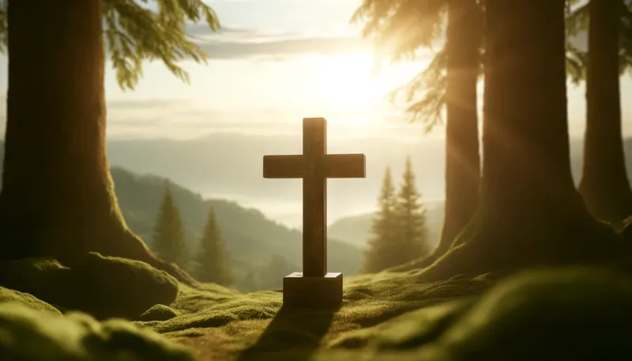

Ｐ♢ＲＴＦ♢ＬＩ♢
𝘙𝘦𝘭𝘪𝘨𝘪𝘰𝘯

Ett av mina största intressen i livet är religion, främst Kristendomen. Jag är själv kristen och jag lär mig dagligen mer om tron och förstärker min egna tro. Gud har jag alltid trott på, men jag var inte särskilt intresserad i religion fram till nu.
𝔉𝔞𝔰𝔥𝔦𝔬𝔫

Fashion är ett av mina nyare intressen. Jag har länge hållit koll på vad det är jag har på mig och vad det är gjort på, men aldrig tidigare har jag haft ett faktiskt intresse i hur jag kan klä mig. På sistone har jag börjat ha på mig mer baggy-fit kläder och zip-up sweatshirts.
𝑀𝓊𝓈𝒾𝓀
Westside Gunn -
Hitler Wears Hermès 8: Side B (2021)
Ett av mina aboluta favoritmixtapes någonsin.
Frank Ocean -
Blonde (2016)
Ett av de bästa albumen genom tiderna.

Nujabes -
Metaphorical Music (2003)
Artistens bästa konstvert, helt utmärkt produktion.

Domo Genesis -
No Idols (2012)
Fantastisk produktion.